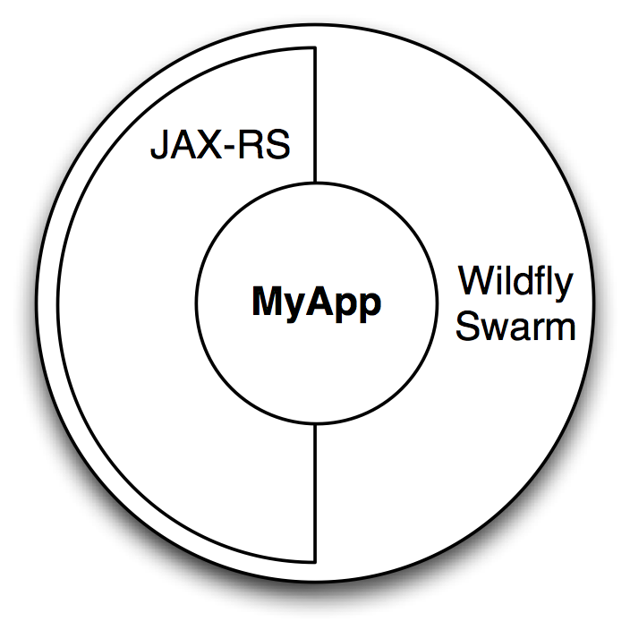
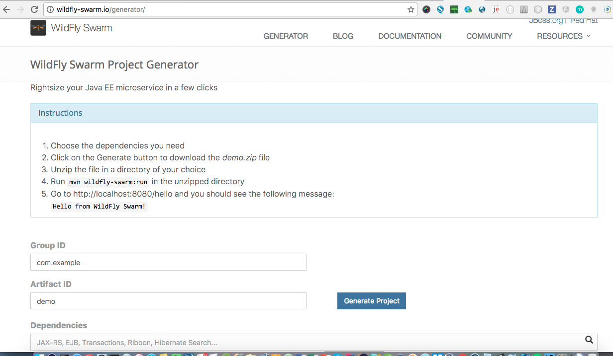
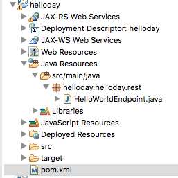
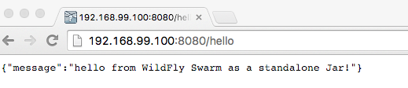
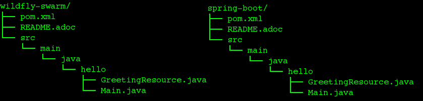

Como transformar um projeto JEE em um micro-serviço com o wildfly-swarm.
Palestrante: Rogério Fontes / @rogeriofontes
Sobre o palestrante:
Apaixonado em maneiras e formas ágeis de criar código fonte. Programando sempre tomando um bom café e escutando um belo e pesado rock`n roll. Trabalha a mais de 10 anos com java e linux, passando por android, python, php e agora com o coração no angular.js e node.js. Professor universitário de redes de computadores, Java, Análise de Sistemas e dispositivos móveis. Jugleader e co-fundador do uaijug (grupo de usuários do triângulo mineiro) e também co-fundador do triângulo hackerspace. Além disso aventurando como Empreendedor e trabalha como Arquiteto de software no comdominiodigital, projeto da digitos.

O que podemos fazer?
Com o WildFly Swarm, podemos empacotar nossa aplicação JEE e rodá-la de forma simples e descomplicada, sem precisar configurar um servidor de aplicação completo e ainda podemos rodar rapidamente nossa aplicação. Com isso podemos criar um micro-serviço de forma rápida, performatica e eficaz usando nossa aplicações JEE
O que é wildfly?
Wildfly é o servidor de aplicação JEE Open Source da comunidade JBoss. Um servidor de aplicação deve permitir a implantação("deploy") de aplicações que sigam os padrões JEE. O Wildfly tem uma arquitetura modular e vem com ótimas ferramentas de gerenciamento, recursos para criação de clusters(alta disponibilidade).
O que é Wildfly Swarm?
É um projeto que pode ser usado para fornecer em únicos arquivos (jars), somente o que sua aplicação precisa do Wildfly. E empacotando o que for necessário em um uberjar o que é preciso para executar essa aplicação.
O que é uberjar?
O que oferece?
WildFly Swarm, oferece uma abordagem inovadora para empacotar e rodar Aplicações Java EE empacotando apenas o suficiente do servidor para rodar sua aplicação em um jar. Ele também é compatível com MicroProfile.
(Tradução livre)
O que é MicroProfile?
http://microprofile.io/
http://developers.redhat.com/blog/2016/06/27/microprofile-collaborating-to-bring-microservices-to-enterprise-java/
Olá Mundo, usando RESTful com Wildfly Swarm.

Gerando a Aplicação?

- Entre no site: http://wildfly-swarm.io/generator/
- Selecione as dependências
- Gere o projeto
- Importe no Eclipse como projeto maven
Estrutura do Projeto
Para rodar
Plugin Wildfly-Swarm
demo
org.wildfly.swarm
wildfly-swarm-plugin
${version.wildfly.swarm}
package
Dependências Wildfly-Swarm
javax
javaee-api
7.0
provided
org.wildfly.swarm
cdi-jaxrsapi
Endpoint Simples
package helloday.helloday.rest;
import javax.ws.rs.Path;
import javax.ws.rs.core.Response;
import javax.ws.rs.GET;
import javax.ws.rs.Produces;
@Path("/hello")
public class HelloWorldEndpoint {
@GET
@Produces("text/plain")
public Response doGet() {
return Response.ok("Hello from WildFly Swarm!").build();
}
}
Como Rodar o Projeto
Para rodar pelo maven:
mvn clean package wildfly-swarm:run
Para rodar fazendo build da aplicação:
mvn clean package
java -jar target/yourpackage-swarm.jar
Sou fã do docker, e ai?
Para rodar com o docker:
Para rodar com o docker crie um arquivo chamado helloword, com a seginte estrutura:
FROM java:openjdk-8-jdk ADD target/helloworld-swarm-0.0.1-SNAPSHOT-swarm.jar /opt/helloworld-swarm.jar EXPOSE 8080 ENTRYPOINT ["java", "-jar", "/opt/helloworld-swarm.jar"]
Para rodar fazendo com o docker:
docker build -t helloworld .
docker run -d -p 8080:8080 [id da imagem]docker logs -f [id da imagem]
Rodando no Navegador
Wildfly Swarm x Spring boot
O que falar sobre a diferenças?
Leia mais, nesse artigo
Estrutura da aplicação é bem semelhante
o build e o deploy é semelhante
Para fazer build rodar um Hello World no wildfly Swarm com RESTful web service:
$ cd wildfly-swarm/
$ mvn clean install
$ java -jar target/gs-rest-service-swarm.jar
Para fazer build rodar um Hello World no spring boot com RESTful web service:
$ cd spring-boot
$ mvn clean install
$ java -jar target/gs-rest-service.jar
Para rodar os dois framework, por default, não precisam passar o contexto:
http://localhost:8080/greeting
http://localhost:8080/greeting?name=User
Jar final no swarm é maior e mais complexo que no spring boot
WildFly Swarm é 3 vezes que o Spring boot em tamanho - WildFly Swarm é 5 vezes que o Spring boot em número de jars
- WildFly Swarm é 5 vezes que o Spring boot em número de arquivos
- WildFly Swarm é 30 vezes que o Spring boot em número de directorios
O que isso se deve?
Isso se deve por causa do class loading do framework, WildFly Swarm usa JBoss Modules que é mais modular e dinâmico. O Spring Boot usa tradicional o mecanismo de class loading, o flat class loading.
Por que o WildFly Swarm e mais complexo em sua arquitetura?
O classe loading dos modulos do Jboss são mais complexos que o tradicional flat class loading framework, a execução da camada de aplicação. Além disso, WildFly é mais complexo quem tomcat/jetty/undertow.